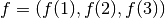

What is linear algebra?
Main targets of linear algebra are vectors and matrices. We learn them in high school but linear algebra in university mathematics has somewhat different flavor from one in high school. Furthermore linear algebra is difficult to imagine where we use it compared to calculus. So we first consider its different points and its usage in mathematics and physics.
In high school we consider vectors as geometric objects. However we now consider them as algebraic objects, since they are ones in linear “algebra”! Our vectors are a generalized/abstract version of ones in high school. A vector needs not have direction nor length. Then, what properies should vectors have?
Abstract definition of vectors
In the following we sometimes use the terms linear spaces or vector spaces. These words have the same meaning.
Let be a field of real numbers: a real number is also
called a scaler. A set  is called a if its elements have the
following properties. Elements are vectors and
are real numbers in the following
expressions.
is called a if its elements have the
following properties. Elements are vectors and
are real numbers in the following
expressions.
Associativity:
Commutativity of sum:
Existence of unit for sum: there is an element such that
Existence of an inverse element for sum: for any
 there is an element such that
there is an element such thatfor the above
 . In fact we can prove the uniqueness of an
inverse element.
. In fact we can prove the uniqueness of an
inverse element.Relation of scalers (real numbers) and vectors:
Multiplication law for a scaler unit in :
Important points are
- vectors are summable and sum is commutative operation, and
- vectors and scalers satisfy some multiplication laws.
The above properties hold for geometric vectors in high school, of course. Our purpose is different from it: we consider vectors as algebraic objects and we derive many interesting properites using (mainly) algebraic thinking!
Examples of linear spaces
- The set of real numbers itself with scaler .
- The set of complex numbers itself with scaler .
- The set of complex numbers itself with scaler .
- A plane with scaler .
- A three dimensional space
 with scaler
.
with scaler
. - Higher dimensional space
 () with
scaler .
() with
scaler . - Some subsets of (numerical) sequence, e.g., , , with scaler .
- Some subsets of functions, e.g., , , with scaler .
- A set of linear operators with scaler .
Today’s main targets are introduction to the last three items and its relation to calculus.
Examples of finite, but higher dimensional spaces than three
We have many examples for higher dimensional objects in real world, e.g.,
- (time evolution of) stock prices,
- players’ movement in soccer,
- computerized control in robots.
For (time evolution of) stock prices, there are many lisiting companies and its time evolution is important in real world. This evolution is mathematically reprensetable in higher dimensional space picture.
Other examples are also similar characterization. These are related to analytical mechanics in physics. Moreover analytical mechanics is closely related to geometry. See .
Function as a vector
First recall the definition of vectors in three dimension: letting  and be three dimensional vectors then their sum is defined by
I.e., sum of vectors is defined by component-wise. Hence we also try to define a sum of functions as
In short we define a sum by
For scalar multiplication we set
Sum and scalar multiplication defined above satisfy the axioms of a linear space. Thus we conclude a space of functions is a linear one [2].
Function spaces: examples of infinite dimensional spaces
We have infinitely many infinite dimensional objects. Examples are weather maps and wind direction maps.
Take a point in a world map, and then there are infinitely many directions to blow wind. In classical point of view there are infinitely many space points, and hence there are infinitely many space points and directions of the wind are also infinitely many patterns.
What do we represent this infinitely many probability of the wind in
real world? We use functions in several variables,
 . A value of a function
represents a direction of wind and its strength
(length of a vector) at space-time point
. We always use this type of mathematics
in physics.
. A value of a function
represents a direction of wind and its strength
(length of a vector) at space-time point
. We always use this type of mathematics
in physics.
Furthermore there are infinitely many types of wind distribution, i.e., we have infinitely many functions. For systematic thinking it is useful to think where functions live in. This is called a function space. There are many useful function spaces and we select a proper space as the situation demands.
In this way, in mathematics we will encounter various types of spaces other than a three dimensional, geometric space. We consider spaces where functions live and ones where spaces itself live.
Linear maps, functionals
We usually consider maps instead of functions in university mathematics. In fact a map is just a function whose domain and range are general sets. First we define a linear map and linear functionnal.
Assume and  are linear spaces. Then a function
are linear spaces. Then a function
 is called a . If
is called a . If  preserves
linearity, i.e., has a property
preserves
linearity, i.e., has a property
then an operator is called a .
If is then is usually called a
. Furthermore is called a if it is linear.
Here are some examples.
Coordinate maps: Let . We write a vector as for later use. This is just a notational convention. Then we get functionals by
This is a linear functional since this has a property
Definite integrals: First we define a map as
This is a linear functional since this has a property
Another type of a definite integral:
(1)
This is a nonlinear functional. In physics this
 is called
an energy functional.
is called
an energy functional.Differential operators: Define an operator as
This is a since it satisfies
In this way we connects linear algebra with calculus. For analysis of nonlinear functionals we also need various linear spaces and some technique from linear algebra.
Eigenvalues, eigenvectors
These are not learned explicitly in high school. However they sometimes appears in entrance exams.
Let  be a linear operator on a linear space . A real
number
be a linear operator on a linear space . A real
number  resp. a vector
resp. a vector  are called an resp. if
they satisfy
are called an resp. if
they satisfy
Here are examples.
Let be a second order differential operator (this is linear) with respect to time and consider

i.e.,
This is an equation of motion for a spring in physics. A solution (eigenvector) is

We can write a solution using a celebrated Euler’s formula:
Consideration of eigenvalues for a differential equation is somewhat difficult and we omit it. See, e.g., for details.
Mathematical application of linear algebra
There many branches related to linear algebra. Here are some examples. See also .
- Theory of Lie group and its representation theory.
- General algebra.
- Algebraic geometry.
- Analysis of differential equations.
- Functional analysis.
- Operator algebra.
Physical application
There many branches related to linear algebra in physics, too. See also .
For example, in quantum mechanics, one of the most fundamental physical theory, linearity is important and fundamental. We say “a superposition principle valids for wave functions,” and this “superposition” means linearity.
In high school we learn a superposition principle for wave. This holds because our wave equation is linear in high school.
Linear algebra and statistics
We use statistics in many branches, including humanities and sociology. E.g., natural language processing has many humanity and infomation theoretic elements. This area needs broad knowledge including probability and statistics. Interested readers should learn, e.g., principal component analysis.
Linear algebra and computer science
We have applications in computer science. In numerical analysis we use linear algebra. See the code theoery or Google’s page rank for real world application. [3]
| [2] | A function space is linear if an image of its elements is a linear space. Function spaces can be non-linear, e.g., an image of its elements is a manifold or general set. |
| [3] | See, e.g, my movies, http://www.nicovideo.jp/watch/sm7599426, http://www.nicovideo.jp/watch/sm10684363. |